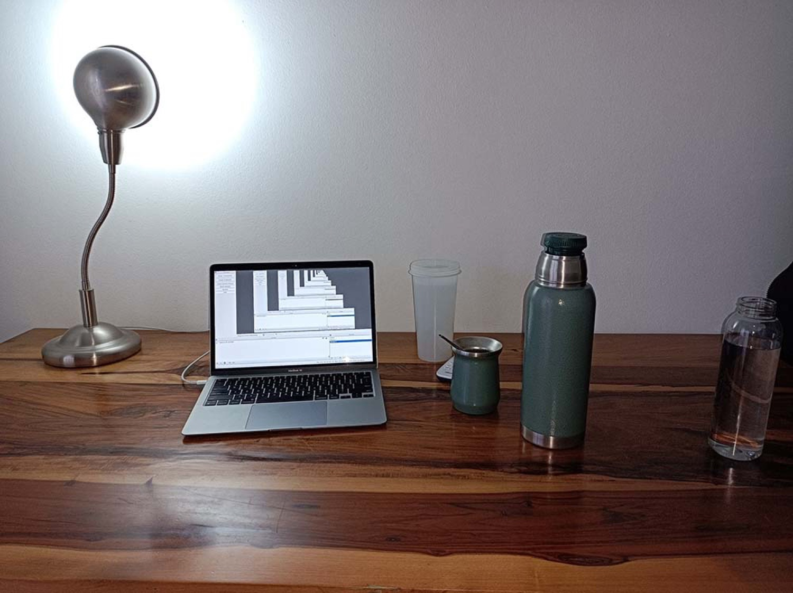

Este es un post sin sentido, ni nada que aportar al igual que este donde muestro un post de ejemplo de este blog.
Asi sera la forma en que usare mi setup desk para grabar todo el contenido que subire en mis canales de comunicacion.
Y aqui el resultado con mi setup digital:
Increible no? Nos vemos en YouTube.